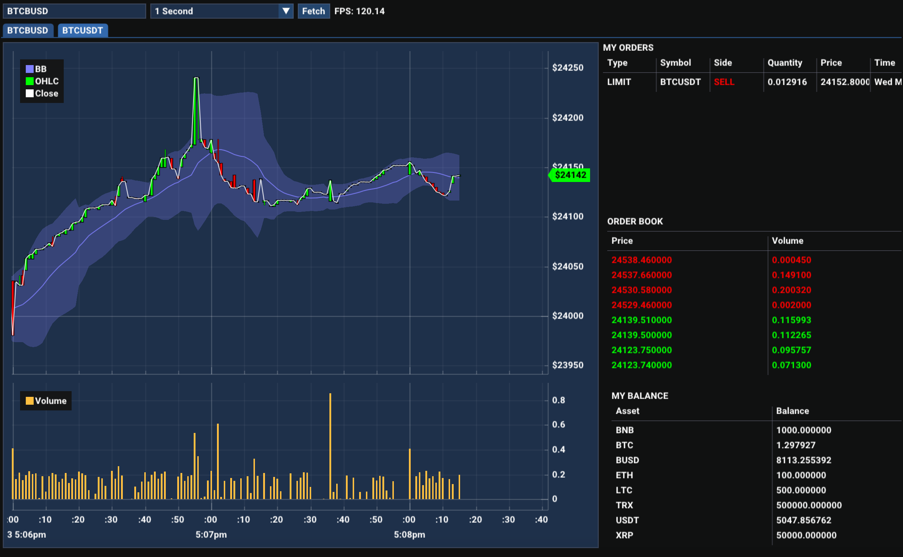

ATS is an open-source implementation of an algorithmic trading systems library in C++.
It currently supports the Binance Exchange but the project is modular and any exchange can be added.

Prerequisites
The project requires C++ 17 and CMake.
Submodules include binance-cxx-api, GoogleTest and their dependencies.
Quick Start Overview
Cloning
git clone --recurse-submodules -j4 https://github.com/anouarac/ATS.git
Building
$ cd ATS
$ mkdir build
$ cd build
Windows
Then generate the binaries in the build directory.
Linux/Mac
You should now be able to run the targets either through an IDE such as Visual Studio, or through the terminal.
Example
Working with this library can go as follows with the Binance EMS:
- Place Binance Spot Net API keys in
$HOME/.binance/key and $HOME/.binance/secret, or $HOME/.binance/test_key and $HOME/.binance/test_secretfor the Spot Test Net.
- Import the following libraries
#include <iostream>
#include "json/json.h"
#include "binance_logger.h"
Main header file for the ATS library.
- Setup Logger
binance::Logger::set_debug_level(1);
binance::Logger::set_debug_logfp(stderr);
- Initialise OMS and Binance EMS
The BinanceExchangeManager class is a class that defines the interface for managing orders on the Bin...
Definition: BinanceExchangeManager.h:31
A class for managing orders.
Definition: OrderManager.h:129
- Interact with EMS
Json::Value result;
b_ems.getUserInfo(result);
std::cout << result.toStyledString() << std::endl;
std::cout << b_ems.getPrice("ETHUSDT") << std::endl;
Documentation
For further details check the documentation.